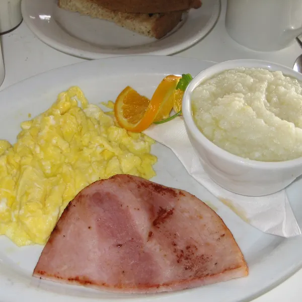
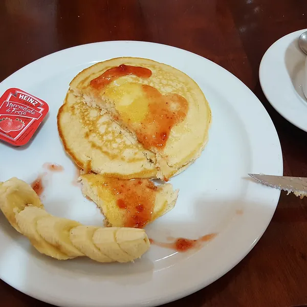
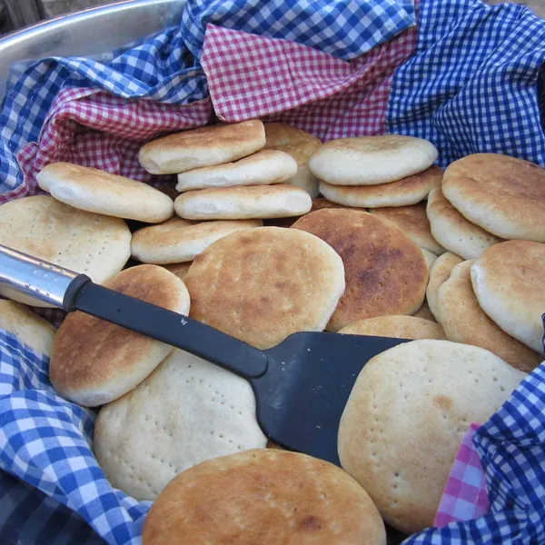
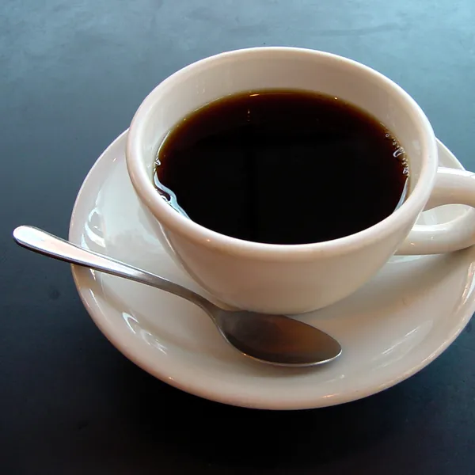
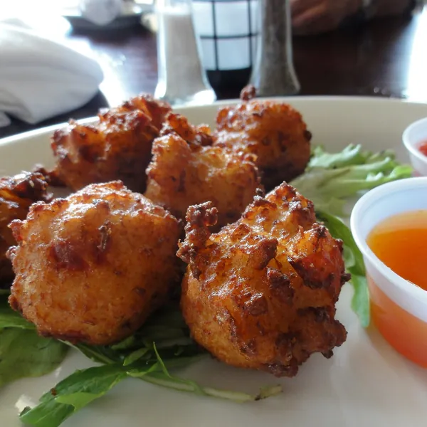
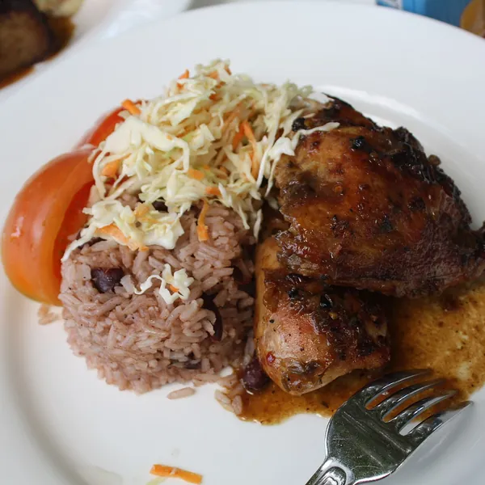
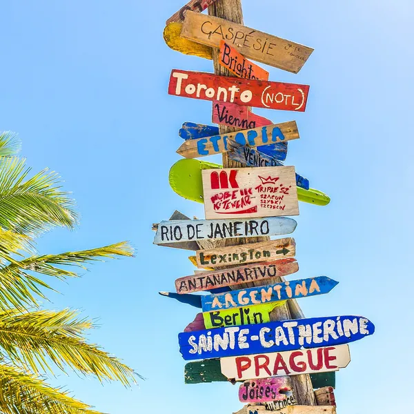

Photo credits
The photos on this website are sample photos under open licences, used until Tiny's sends its own.
 PROPER Jamaican breakfast!! IMG 5883 by xuhulk, CC BY 2.0, via Wikimedia Commons
PROPER Jamaican breakfast!! IMG 5883 by xuhulk, CC BY 2.0, via Wikimedia Commons Grits1 by sashafatcat, CC BY 2.0, via Wikimedia Commons
Grits1 by sashafatcat, CC BY 2.0, via Wikimedia Commons
Ham and eggs with grits by Bob from Allentown, Pennsylvania, United Staes of America, CC BY 2.0, via Wikimedia Commons
Pancakes for Breakfast - Oxkutzkab Yucatan by Bernard DUPONT, CC BY-SA 2.0, via Wikimedia Commons
Johnny cakes in basket by US Embassy Belize, public domain, via Wikimedia Commons
A small cup of coffee by Julius Schorzman, CC BY-SA 2.0, via Wikimedia Commons conch, cracked by rubixcuben, CC BY 2.0, via Flickr
conch, cracked by rubixcuben, CC BY 2.0, via Flickr
CONCH FRITTER by inazakira, CC BY-SA 2.0, via Wikimedia Commons
Jerk Chicken Plate - 4239908274 by naotakem, CC BY 2.0, via Wikimedia Commons Baked macaroni and cheese 1 by Martin, CC BY 2.0, via Wikimedia Commons
Baked macaroni and cheese 1 by Martin, CC BY 2.0, via Wikimedia Commons Fried plantain with stew by Edithobayaa1, CC BY-SA 4.0, via Wikimedia Commons
Fried plantain with stew by Edithobayaa1, CC BY-SA 4.0, via Wikimedia Commons Rice and Peas by File:Rice and Peas.png: Whispyhistory conversion to jpg: Hike395, CC BY-SA 4.0, via Wikimedia Commons
Rice and Peas by File:Rice and Peas.png: Whispyhistory conversion to jpg: Hike395, CC BY-SA 4.0, via Wikimedia Commons
Long Bay Beach, Turks and Caicos Islands (Unsplash) by Deanna Ritchie deannaritchie, CC0, via Wikimedia Commons


.jpg){kind=link}